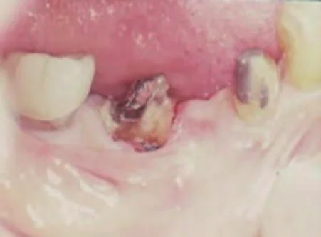
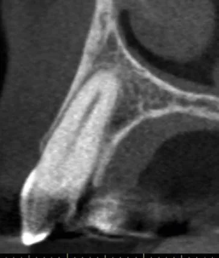

نسخه استخراجشده؛ ترجمه یا تأیید علمی انجام نشده است. وضعیت: captured
یافتهای که رویکرد به کاشت فوری را عوض میکند: نقصهای دهیسنس فاسیال که پس از کشیدن دندان و کاشت فوری شایعاند، ترمیم آسیبدیدهتری نسبت به نقصهای اینفرابونی نشان دادهاند.
یعنی نوع نقص استخوانی اهمیت دارد: نقصی که دیواره ندارد (دهیسنس) بدتر ترمیم میشود از نقصی که دیواره دارد (اینفرابونی). و ناحیهی قدامی ماگزیلا با آن تیغهی کمتر از یک میلیمتری، دقیقاً محل تولید دهیسنس است.
مشکل ثبات اولیه. نبود استخوان کرستال در محل کشیدهشده، رسیدن به ثبات اولیه را برای کاشت فوری چالشبرانگیزتر میکند. و راهحل رایج — عمیقتر بردن استئوتومی برای گرفتن پایداری از استخوان آپیکال — خودش خطر تازهای میسازد.
خطر عمیقتر رفتن در مندیبل خلفی. عمیقتر بردن استئوتومی میتواند به تجاوز به کانال مندیبل و آسیب عصبی یا پرفوراسیون صفحهی لینگوال بینجامد. و نکتهی دقیقتر: آسیب عصبی بهویژه در موقعیتهای عصبی نوع ۱ شایع است.
طبقهبندی مسیر عصب. در مندیبل خلفی، مسیر عصب آلوئولار تحتانی میتواند از نوع ۱ تا نوع ۳ متغیر باشد، و استخوان آپیکال در دسترس بههمان نسبت از بسیار کم تا کافی تغییر میکند — و ریسک جراحی متناسب با آن. در نوع ۱ کانال به آپکس ریشهها نزدیک است و ارتفاع استخوان کم؛ نوع ۳ بیشترین ارتفاع استخوان را دارد و برای کاشت مساعدترین است.
پس پیش از تصمیم به کاشت فوری در مندیبل خلفی، نوع مسیر عصب یک ورودی جدی است: تعیین میکند اصلاً استخوان آپیکالی برای گرفتن پایداری وجود دارد یا نه.

پیش از بحث دربارهی عوارض کاشت فوری، عمداً گزینهی جایگزین یعنی کاشت مرحلهای را مرور میکنیم. این ترتیب خودش یک پیام دارد: کاشت فوری همیشه انتخاب پیشفرض نیست — یکی از دو گزینه است.
سه عاملی که به سمت مرحلهای شدن میبرند و همهشان را در همین یونیت دیدی:
۱. تراکم D4 — نرخ شکست بیشتر با کاشت فوری.
۲. نبود استخوان کرستال کافی برای ثبات اولیه، بدون اینکه بتوان با عمق بیشتر جبرانش کرد (مثلاً وقتی کانال نزدیک است).
۳. نقصهای سخت و نرم از پیش موجود — کاشت فوری چالشهای زیادی ایجاد میکند، بهویژه در بیمارانی که کمبودهای بافت سخت و نرم از پیش دارند.
ترکیب با پروویژنال. کشیدن دندان و کاشت فوری میتواند با پروویژنال فوری ترکیب شود — و دو حالت را باید از هم جدا کرد: غیرعملکردی یا بارگذاریشده. این تمایز مهم است: قرار دادن یک ترمیم موقت لزوماً به معنای بارگذاری آن نیست.
و انتخاب مرحلهبندی پس از کاشت: پس از کاشت ایمپلنت، میتوان اباتمنت هیلینگ (یکمرحلهای) یا کاور اسکرو (دو مرحلهای) قرار داد — همان تصمیمی که در یونیت ۱۱ دیدی، حالا در بستر کاشت فوری. و معیارش همچنان همان است: ثبات اولیهی بهدستآمده.
